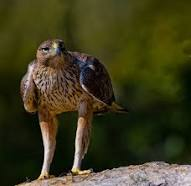
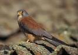
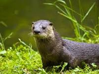
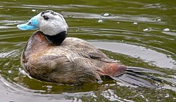

- Fartet (Aphanius iberus / Lebias ibera)
- Águila perdicera (Hieraaetus fasciatus)
- Cernícalo primilla (Falco naumanni)
- Avutarda (Otis tarda)
- Nutria (Lutra lutra)
- Lince (Lynx pardina)
- Malvasía cabeciblanca (Oxyura leucocephala)

Descripción
Aphanius iberus es una especie de pez ciprinodontiforme de la familia Cyprinodontidae. Es una de las especies de vertebrados ibéricos en mayor peligro de extinción.
Hábitat
Se le encuentra en zonas someras y de aguas lentas en ambientes muy diversos, como desembocaduras de ríos, lagunas litorales y charcas, salinas y cuerpos de aguas dulces, debido a su capacidad para tolerar amplias variaciones en la salinidad (eurihalino), la temperatura (de 10 a 32 °C; «euritermo») y el pH (dentro del rango que va de 6,5 a 7,5).
Sin embargo, ha sido desplazado por especies exóticas invasoras como la gambusia (originaria de Norteamérica e introducida en España en 1921 como parte de la campaña de erradicación del mosquito responsable de la transmisión del paludismo), quedando prácticamente relegado a zonas con salinidades donde la gambusia no puede sobrevivir, razón por la que es más frecuente encontrarlos en aguas salinas o hipersalinas.
Estado de conservición
Pese a encontrarse distribuido por diversas localidades de una gran parte de la península, al ser zonas generalmente de reducidas dimensiones y estar amenazadas, el pez está considerado en «peligro de extinción» en base al Real Decreto 439/1990, de 30 de marzo, por el que se regula el Catálogo nacional de especies amenazadas. Entre las causas que inciden negativamente en la supervivencia de la especie a nivel nacional se pueden citar:
-Contaminación de las aguas por residuos urbanos y agrícolas.
-Destrucción o transformación de su hábitat.
-Introducción de especies exóticas como el (cangrejo americano, la gambusia y la lubina negra).
-Desaparición del canal y balsas de riego.
-Contaminación del lecho fluvial por vertidos incontrolados.
-Eliminación de algas en los Estanques, con productos tóxicos para el fartet (como, por ejemplo, el sulfato de cobre), o llevándose a cabo su techado, impidiendo la llegada de luz al agua.
-Procesos de eutrofización (principalmente por vertidos de nitratos y sulfatos) y contaminación de las albuferas.
En la actualidad, quedan muy pocos ejemplares en el Mar Menor.
El coleccionismo también ha influido en su retroceso, ya que fue apreciada por los acuariófilos, aunque ese interés ha disminuido frente a especies tropicales más vistosas y por las sanciones.

Descripción
El águila azor perdicera o águila perdicera es una especie de ave accipitriforme de la familia Accipitridae que habita desde la cuenca mediterránea hasta el sudeste asiático.
Hábitat
En la Región de Murcia podemos verla en las Sierras del Altiplano (La Pila, El Carche, Sierra Larga, Picarcho), en algunas de la Vega Alta del Segura (Cabeza del Asno y del Puerto), y en las sierras litorales de Cartagena, Mazarrón, Lorca y Águilas (Almenara).
Estado de conservación
Según el Catálogo de Especies Amenazadas de Fauna Silvestre de la Región de Murcia (Ley 7/1995 de 21 de abril), el águila perdicera se encuentra catalogada 'en peligro de extinción'.

Descripción
El cernícalo primilla es una especie de ave falconiforme de la familia Falconidae que se extendía por casi la totalidad de la península ibérica, sur de Francia, sur de Italia, los Balcanes y desde el mar Caspio y Anatolia por gran parte de Asia, también se encuentra en el norte de África desde Marruecos hasta Egipto.
Hábitat
Estrechamente ligado al hombre, por norma general en terrenos abiertos, campos de cultivo, praderas, zonas húmedas, etc. Distribución: Sur y Este de Europa, África y Asia.
Estado de conservación
El cernícalo primilla es una especie migratoria. Durante la época reproductora, se distribuye por el Paleártico, por debajo de los 55º norte, desde el suroeste de Europa y el norte de África hasta Mongolia. En otoño, marcha a hibernar a las zonas estépicas de África, más al sur del Sáhara, aunque se ha descrito la invernada de una parte importante de la población en varios lugares de la península Ibérica y otras localidades del sur de Europa, sur de Ásia y noroeste de África.
Descripción
La avutarda común es una especie de ave otidiforme de la familia Otidae, el único miembro del género Otis, que da nombre a la familia. Se distribuye por Europa y a través de Asia hasta China, además del norte de África.
Hábitat
Su hábitat original son las estepas y praderas naturales del centro de Asia, pero desde la Antigüedad con el avance de la civilización y la agricultura, se ha adaptado a vivir en las llamadas pseudoestepas o agroestepas (terrenos abiertos con pastoreo extensivo y cultivos de secano, sobre todo de cereal). Por esta razón se expandió en tiempos históricos hacia el oeste de Europa.
Su hábitat óptimo está constituido por estepas cerealistas de secano, completadas por un mosaico de parcelas en barbecho, de leguminosas, viñas, pequeños olivares, almendrales y algunas áreas de vegetación natural.
Estado de conservación
Se trata de una especie calificada como especie vulnerable según criterios UICN, debido al declive que han sufrido la mayoría de sus poblaciones por la pérdida y fragmentación de su hábitat. Los factores principales que han determinado esta reducción han sido la intensificación agrícola, la extensión de los cultivos de regadío, la construcción de infraestructuras (carreteras, líneas eléctricas, urbanizaciones), la caza y el uso de pesticidas. En el pasado su área de distribución fue mucho mayor, ya que se ha extinguido en la mayor parte de Europa durante los siglos XIX y XX (por ejemplo en las Islas británicas en 1832 y en Rumanía en 1967).
A pesar de la prohibición de su caza desde 1980, en España la avutarda se encuentra amenazada por la degradación y reducción de su hábitat natural debido a roturaciones de zonas esteparias, conversión a regadío de los secanos, concentración parcelaria, desaparición de linderos, barbechos y rastrojos, desaparición de mosaicos de cereal, olivar, viñedo y almendral, así como al aumento de la presencia humana, vallado de fincas, tendidos eléctricos, uso de plaguicidas, furtivismo, etc. Otras amenazas para su hábitat son la proliferación de infraestructuras o las molestias derivadas de actividades de ocio (caza o vehículos todo-terreno).

Descripción
La nutria europea o paleártica es un mamífero carnívoro de la familia de los mustélidos de hábitat acuático.
Hábitat
Su hábitat preferido está situado en las orillas de los ríos bordeadas por bosques, vegetación espesa o paredes de piedra. Le gustan las aguas cristalinas con fondos pedregosos.
Estado de conservación
Su hábitat preferido está situado en las orillas de los ríos bordeadas por bosques, vegetación espesa o paredes de piedra. Le gustan las aguas cristalinas con fondos pedregosos.
Descripción
El lince ibérico es una especie de mamífero carnívoro de la familia Felidae, endémico de la península ibérica, conocida internacionalmente por su recuperación tras haber estado en peligro crítico de extinción a principios del siglo XXI.
Hábitat
El lince ibérico se encuentra en el bosque y matorral mediterráneo, en zonas muy restringidas de la península ibérica. En España en muy pocas áreas, bien conservadas y aisladas de la actividad humana, mientras que en Portugal, su población se encuentra en aumento, especialmente en el espacio protegido del Valle del Guadiana.7 Este tipo de hábitat le proporciona refugio y pastos abiertos para cazar conejos, que suponen el 90 % de su dieta.
Estado de conservación
La distribución del lince ibérico se ha restringido desde toda la península ibérica y el Mediodía francés, donde estaba presente hasta el siglo xix, a muy pocas zonas de la península ibérica en el siglo xxi. Durante el Pleistoceno las poblaciones europeas de conejo migraron hacia el sur y una importante población se refugió en la península ibérica. Hoy la especie que ocupa esta área alcanza la mitad de la talla de sus congéneres de Europa central.
En España está categorizada como En Peligro de extinción desde el 5 de abril de 1990 en el Catálogo Nacional de especies amenazadas (RD 439/1990),y En Peligro crítico en el Libro Rojo Nacional.
También está incluida en los Catálogos Regionales de Cataluña (Categoría: A. Anexo II), Navarra (Extinguida), Castilla-La Mancha, Región de Murcia y Comunidad de Madrid (En peligro de extinción).

Descripción
La malvasía cabeciblanca, malvasía común, pato malvasia de cabeza blanca o simplemente malvasía es una especie de ave anseriforme de la familia Anatidae propia de Eurasia y el norte de África.
Hábitat
Es la única especie de su género nativa del Paleártico. Este pato buceador cría en Asia occidental y central, el sur de Europa y el norte de África. Alrededor del Mediterráneo, incluida España y latitudes asiáticas similares se reproduce y permanece todo el año, mientras que las poblaciones más norteñas se desplazan a estas latitudes llegando hasta el norte de Arabia y del subcontinente indio. Su hábitat de la cría son lagos grandes de agua abierta con densa vegetación acuáticas, donde anida.
Estado de conservación
La población originaria de la malvasía cabeciblanca se extendía desde Asia central por todo el Mediterráneo hasta la península ibérica, incluyendo el norte de África. Su área de distribución se ha fragmentado y mermado notablemente, especialmente en la zona occidental. Este pato está considerado en peligro de extinción por la reducción de sus poblaciones en los últimos años. Este declive es debido a la pérdida del hábitat, el deterioro de los humedales, la caza furtiva y al cruzamiento de la población española con la introducida malvasía canela (Oxyura jamaicensis), cuya expansión supone una reciente amenaza. Esto ha llevado a combatir las poblaciones de la especie americana en Europa occidental con campañas de erradicación.